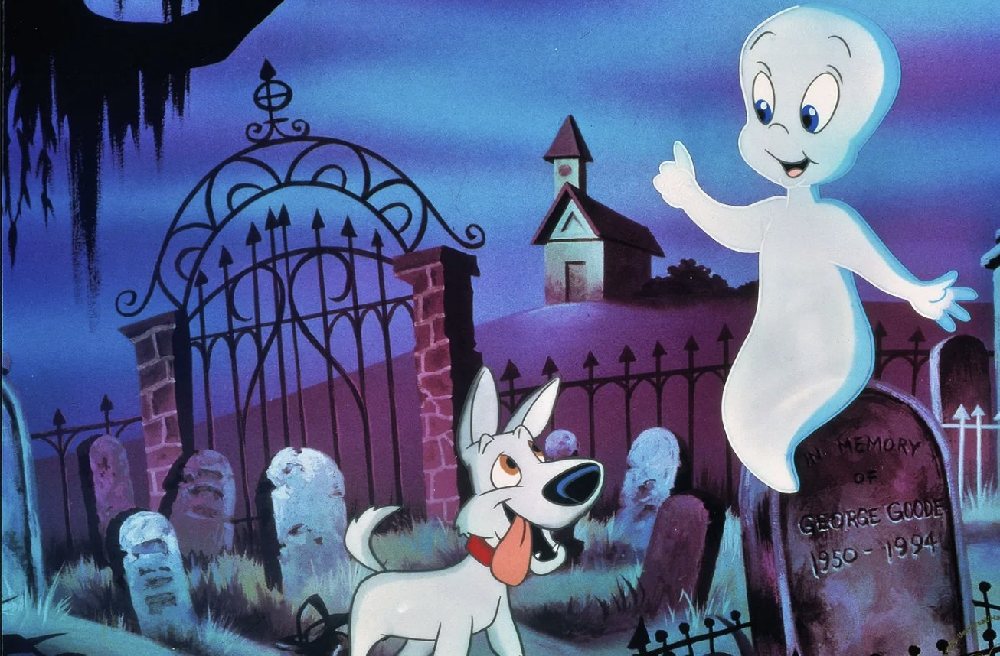

Casper
Casper, 1940 yılında American Publishing Company tarafından yaratılan bir çizgi film karakteridir. Casper, karanlıkta sadece bir gölge gibi görünen, ama içsel olarak sevimli ve dost canlısı bir karakterdir. Çizgi filmin temel hikayesi, Casper'ın karanlıkta yaşaması ve ona karşı düşmanlık gösteren insanlarla olan ilişkileri üzerine kuruludur.
Her defasında kötülük yapmaya çalışan üç amcasını durdurmaya çalışır. Yaptığı iyilikler sonucunda bazen arkadaşlar edinir. Bazı bölümlerde beceriksiz cadı arkadaşı Wendy de onunla beraberdir. İkilinin en büyük ortak noktası, güçlerini insanlara kötülük yapmak yerine iyilik yapmaya adamasıdır.
Sizler de bu keyifli ve eğlence dolu çizgi filmi rahatlıkla çocuklarınıza izletebilirsiniz.